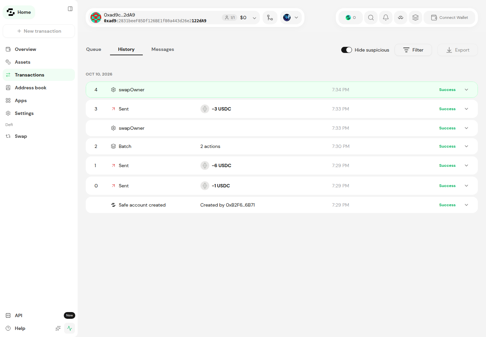

01 · THE CLIENT
Own keys should not mean leaving Swissquote.
Swissquote account
Claire’s crypto
Client story · illustrative persona
Wallet elsewhere
Her keys.
A separate experience.
02 · THE PRODUCT
Three objects. Three clear jobs.
01 / Phone
Pay with the client’s key.
02 / Recovery Card
Replace a lost phone,
with one helper.
03 / Emergency Kit
Encrypted key backup.
Separate code to open it.
Keep the card, kit and code separate. Never project their contents.
03 · EVIDENCE, NOT A LIVE CLAIM
Browser payments and apps reached the public chain.
1 USDC payment
RECORDED BROWSER RUN
Client and wallet held zero ETH.
Swissquote service paid gas.
Payment receipt 0xe3188195… ↗
1 USDC Compound supply
RECORDED BROWSER RUN
Third-party Compound III test deployment.
Approve → supply → approve zero.
Supply receipt 0xa44904bd… ↗
Sepolia test tokens, no cash value. No withdrawal or swap demonstrated. Live on-stage readiness needs human rehearsal.
04 · BROWSER RECOVERY · SEPOLIA
Same wallet. New owner. Payment proved.
Before replacement
Create wallet → fund 2 USDC →
old owner pays 1 USDC →
card + partner starts recovery.
After the real chain wait
Finalize → new owner pays 1 USDC.
Old key refused: read-only GS026.
New kit decrypts offline; owner matches.
· resumed across retained browser sessions
Same wallet 0x9BAE…6E5c · actual 180-second delay + 15-second buffer; no clock manipulation.
MOCK identity / bank / helper checks; virtual WebAuthn, hardware pending. Three-day route not run in G1.
Kit owner check is not a kit-broadcast exit. An accessible owner key can spend and cancel recovery.
05 · NO LOCK-IN
Safe shows the wallet. The kit exit ran by script.

Two different proofs
Safe UI: visibility and interoperability.
Not demonstrated independent signing.
Kit script: moved 3 USDC using the recovered key, RPC only.
Scripted kit exit 0xbc661bfd… ↗A separate test account paid the fee. This was not a live shutdown drill.
06 · LEGAL POSITION
Client control is the argument — not regulatory approval.
Who can move funds?
Owner key pays.
Card + one helper can replace it after a wait.
At the bank door
A one-time signed challenge proves wallet control.
Identity checks are MOCK.
Legal interpretation only. Counsel must assess recovery mandates, sponsored fees and ownership proof. No FINMA approval claimed.
07 · BUSINESS
Clients keep their keys. Swissquote keeps the relationship.
Pilot outcome
Compare retention and trading with a matched client group.
Optional recovery service
Test paid take-up.
Do not assume subscription demand.
Illustrative model, not a forecast. CHF 640k inputs are unconfirmed and intentionally omitted. Sponsorship cost needs a measured gas budget.
08 · CHECK IT YOURSELF
Claire keeps control. Swissquote keeps Claire.
Inspect the historical wallet in Safe’s own app.
Open verified Safe history ↗Sepolia · 0xad9c…2dA9
Team names and public repository URL: HUMAN PENDING.
Prototype for the Swissquote challenge; not an endorsed bank product.

B1 · ARCHITECTURE
The contracts are real. Back-office identity is MOCK.
Client wallet · REAL
Creates and locks owner key.
Signs payments.
Recovery Desk · REAL
Local card approvals and kit opening.
Independent publisher: NOT YET.
Safe app · READ-ONLY
Separate interface.
Reads the same public wallet.
Swissquote services
Fee relayer + live screening.
MOCK: account, KYC, mailbox, helper vault.
Partner process
Card + partner route.
MOCK: face check, helper vault.
Public chain · REAL
Safe 1.4.1 · two recovery modules · USDC.
EVM only. Existing Safe/Candide libraries; no homemade cryptography. Our composition is not audited.
B2 · THREAT MODEL
An accessible owner key can spend. Recovery is not magic.
| Attacker / failure | What the evidence supports |
|---|---|
| Swissquote + partner, no card | Both locks refused their signatures in recorded read-only calls. |
| Stolen phone + email | Outcome depends on access to the owner key. Do not promise immunity. |
| Unlocked / compromised owner key | Can spend immediately and cancel recovery. |
| Stolen card + fooled helper | Can request takeover after a wait; owner can cancel while available. |
| Malicious wallet update | Real client-side key theft risk. Independent publisher not delivered. |
| Phone, card, kit and code all lost | No bank rescue promised; funds may be unrecoverable. |
B3 · CREATION & AUTHENTICATION
The phone creates the key. Extra checks guard sponsorship.
Creation flow
Offline desk makes Recovery Card → app receives public address → MOCK identity enrolment → phone creates encrypted key → Safe deployed → one-time ownership proof → encrypted kit saved.
Signing flow
Small payment: owner key signs.
Above demo limit of 5 USDC: transaction-bound passkey approval for the Swissquote service.
Recorded browser authenticator is virtual, not Touch ID / hardware proof. No creation video available in this package.
B4 · PUBLIC EVIDENCE
Different wallets prove different parts of the story.
| Evidence | Mode / wallet | Receipt or result |
|---|---|---|
| Wallet + payment | Recorded browser · 0x4386…C219 | 0xe3188195… ↗ |
| Compound supply | Recorded browser · 0x9C26…7B51 | 0xa44904bd… ↗ |
| 180-second recovery | Recorded SCRIPT · 0xad9c…2dA9 | 0x1231c281… ↗ |
| Cardless helpers / old key | Recorded read-only contract calls | Refused; no transaction sent. |
| Kit-key exit | Recorded SCRIPT · RPC only | 0xbc661bfd… ↗ |
| G1 browser recovery | Retained browser sessions 0x9BAE…6E5c | Finalize 0x2de7323c… ↗ New payment 0xaf43a7e7… ↗ |
All receipts are Sepolia. Older payment / Compound reports did not test recovery or kit. G1 verifies recovery and kit owner, not kit exit.
B5 · DELIVERY LIMITS
Use evidence cards when live media is unavailable.
Offline fallback · AVAILABLE
These slides, public Safe screenshots, linked receipt IDs and printable judge cards. Explain resumed-session browser recovery and historical scripted kit exit separately.
Human confirmation · PENDING
Hardware passkey rehearsal · creation clip · Compound preview image · freeze test count · team names · AI-tool disclosure · public repo permission.
Old overnight timeline is expired. Slot, roles and live-vs-recorded choices require a current human decision.